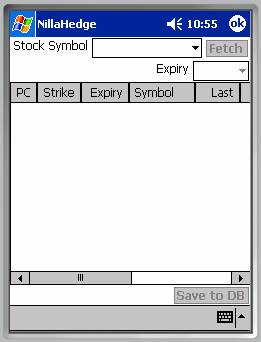
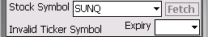
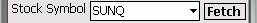
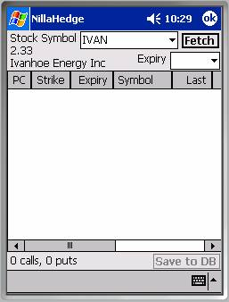
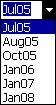
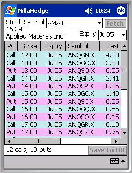

Option Chain RetrieverThe Option Chain Retriever downloads option pricing and related information via the internet. It captures a chain of options expiring on a given date and loads up the Option Chain list control, one row for each option.
It automatically updates the price of any option in your database found in a downloaded chain, but won’t create any new option definitions automatically. It’s very important to stick with exchange registered option symbols because the price update process doesn’t allow the user disapprove or otherwise bypass price updates.
The Option Chain Retriever will also silently update the price of the underlying stock, unless you set the Confirm Save Preferences to require user confirmation. If confirmation is required, the Option Chain Retriever will post a confirmation dialog before modifying the stock price.
The Option Chain Retriever is initialized with no stock symbol and both buttons disabled.
Stock Symbol

The Stock Symbol is a combo-box, supporting drop-down and edit modes of input. You can either select the symbol for a stock you already have defined in the database via the drop-down box, or use the Input Panel to type a stock symbol not yet in your database. We entered ‘AMAT’ in the example at right. Once a symbol is available, the ‘Fetch’ button becomes enabled.Note: There is no local cache of valid stock exchange symbols in NillaHedge - the server is the arbiter of validity for stock symbols. Since it takes a few seconds to hear back from the server, you’ll be more productive if you avoid fetching invalid symbols.
Fetch Button

Once enabled, clicking the Fetch button will initiate a connection with the server to retrieve an option chain with the earliest possible expiration date for the company represented by the Stock Symbol. In the example above, we entered ‘AMAT’ to retrieve the options for Applied Materials Inc (whose Nasdaq symbol is ‘AMAT’). The Fetch button is disabled as soon as the download is launched. Status Messages
Status Messages
After clicking the Fetch button, a series of messages will appear in the status line at the bottom of the dialog (to the left of the ‘Save to DB’ button). The first status message is ‘Opening Request…’ letting you know that progress is underway. Opening a request is a local operation and should complete very quickly. If this message is still around after more than a second, it’s likely that your internet connection is down.
The second status message, ‘Sending Request…’ indicates that NillaHedge is attempting to negotiate a connection with the server. Obtaining an initial connection can sometimes take three to five seconds, depending on the quality of your internet connection and the demand on the server, but once a connection has been established, subsequent requests generally proceed with sub-second elapsed times.
The third status message, ‘Downloading…’ indicates that a connection has been successfully established and the data is currently being copied from the server onto the PocketPC. Downloading can also experience variations in completion times, from less than a second to a couple of seconds, depending on the speed and quality of your connection.

The fourth status message, ‘Extracting…’ occurs during the phase where the list control is being populated with the information just retrieved. Here, the total elapsed time is entirely dependent on how fast your processor is and how many options are contained in a single options chain. For a stock with a dozen options, the extracting phase completes almost instantaneously, but it may take a couple of seconds to populate the list control if there are hundreds of options in a single download.When the extraction phase completes, the status line indicates the number of puts and calls currently contained in the options list; the options list contains a row for each of the options found, the stock price and company name are displayed below ‘Stock Symbol’; and the Expiry combo-box has been loaded with all known expiration dates for options on the specified stock symbol.
Stock Price and Company Name
The first result of extraction is the display of the company name and the current stock price associated with the symbol you requested options for. There’s nothing magical here. The stock price is delayed by about fifteen minutes from the current market. The company name is provided so you can verify that you received what you intended to retrieve.

Expiry DatesThe next result of a successful download is that the Expiry combo-box is loaded with the known expiration months for options on the specified stock. Immediately after download, the Expiry combo-box displays the nearest term expiration date available. Subsequent expiration dates can be found in its drop-down box.
The Expiry combo-box serves two purposes. If you select a date for which you have previously downloaded options, the Expiry combo-box will restore the original sort order (if it has been modified) and scroll the options list so the first option matching the selected expiration date occupies the first row of the options list.
If you select a date for which you have not previously downloaded options, the Expiry combo-box will just enable the Fetch button, enabling you to retrieve options with that expiration date into the options list.

Option Chain List ControlThe primary result of extraction is an option chain populating the central list control with columns indicating whether the option is a put or a call; its strike price; expiration month; option symbol; a set of prices (or derivative numbers): Last, Change, Bid, Ask; Volume, and the Opening Interest in the issue.
Highlight Color
Rows in the options list are color coded to indicate whether the option is a put or a call (making the first column redundant). Puts are highlighted in plum, while Calls are highlighted in cyan.
Column Sorting
All of the column headers act as sort buttons on the column. The first click is an ascending sort, the second produces a descending sort. The result of an ascending sort on Strike price is shown at right.
After sorting, it may be desirable to return to the original sort order. Since there’s nothing intrinsic about the option pricing data that would allow a sort on the data that would restore the original order, the original sort order is hidden in the empty column after the Opening Interest column. Its column header button (only about two characters wide) is blank, but it sorts using the list control’s original sort order.
 Save to Database
Save to Database
The ‘Save to DB’ Button is enabled whenever one or more rows are selected, even if the selected row doesn’t currently appear within the viewable area, i.e. when you select a row and subsequently scroll the window. You can click, drag, and release to select a screen full at a time, or if you use a real or the builtin soft keyboard, you can use shift-click and control-click to add or subtract rows from the selected list.
When you click ‘Save to DB’, the selected options are immediately saved to the database. Shortly thereafter, the rows will automatically be deselected, indicating completion of the operation. When the rows are deselected, the ‘Save to DB’ button will be disabled too.
The option definitions saved will be complete, even if you haven’t previously defined the underlying stock in your database. But if that is the case, the stock will not have dividends defined and it will have a default value for the stock’s volatility. It’s wise to set dividends to accurate values because they affect the value of options drawn on that underlying, as well as all of the income calculations in the positions dialogs and the positions transcript.